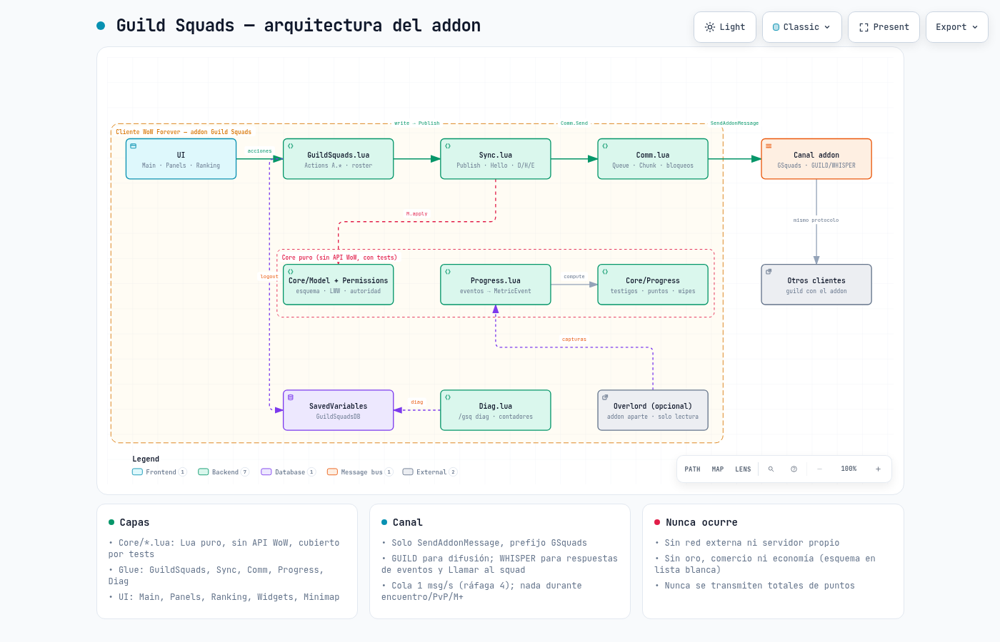
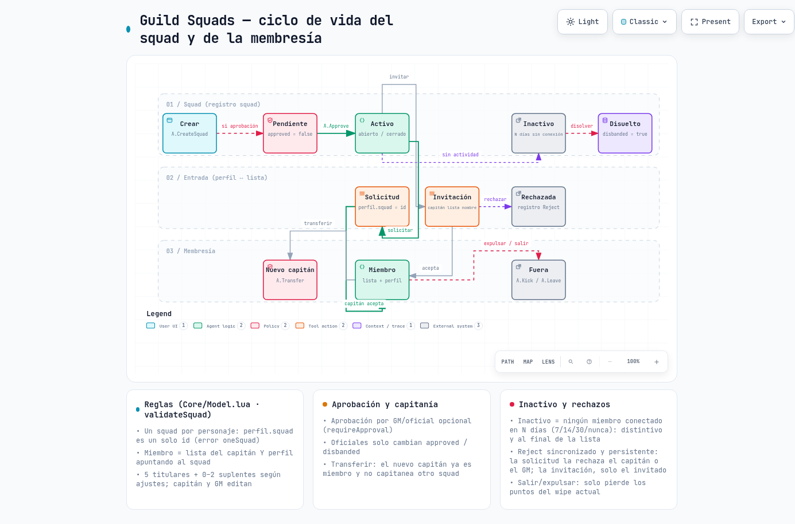
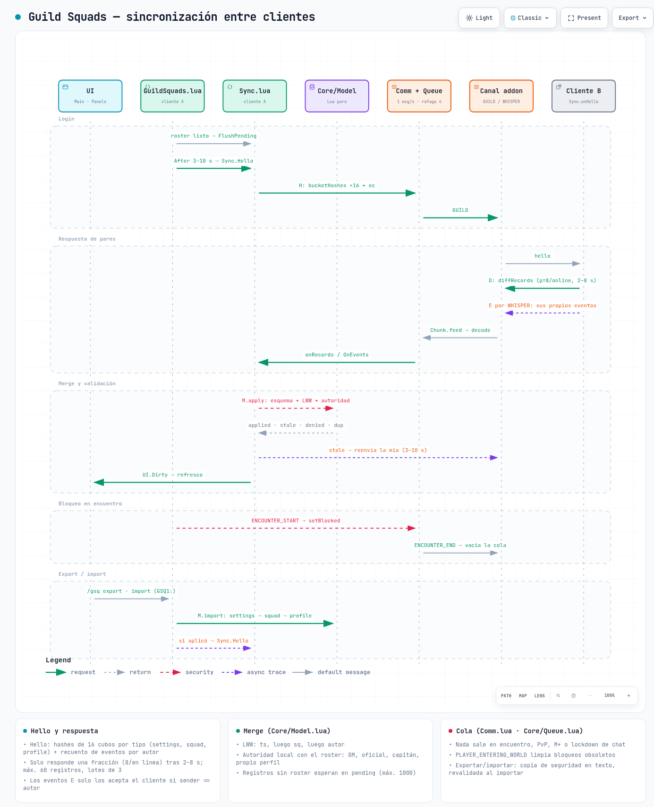
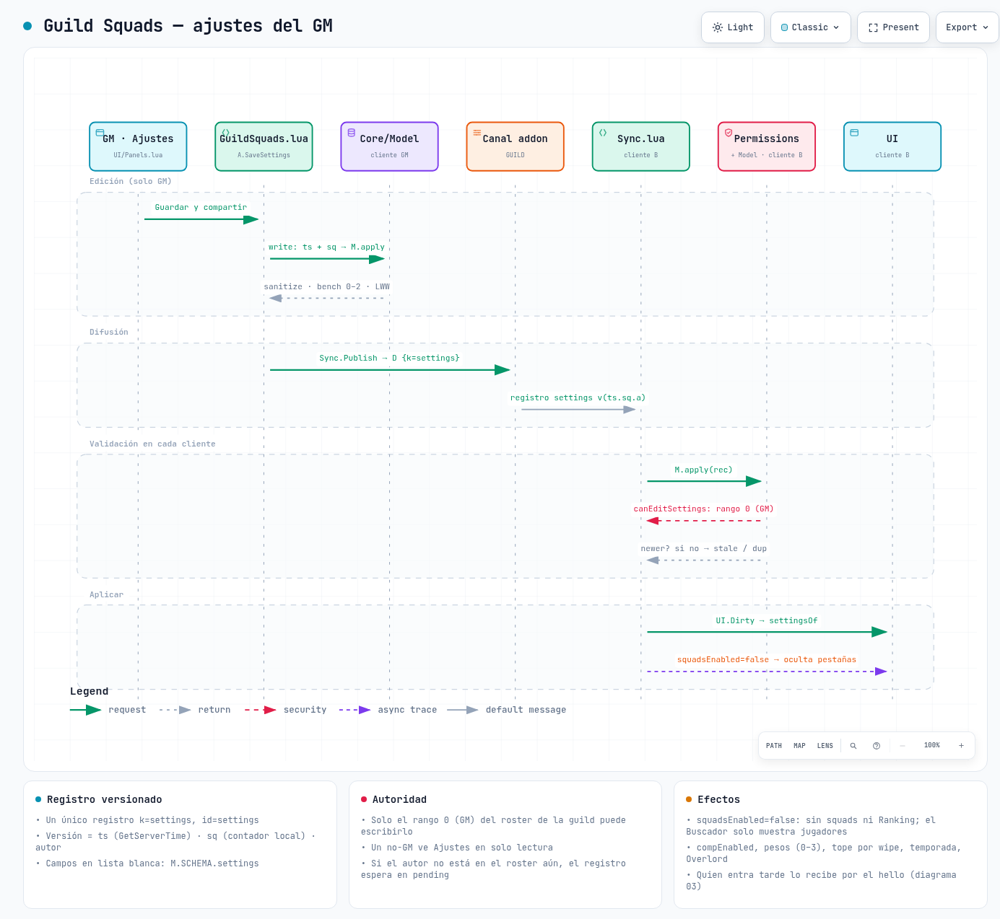
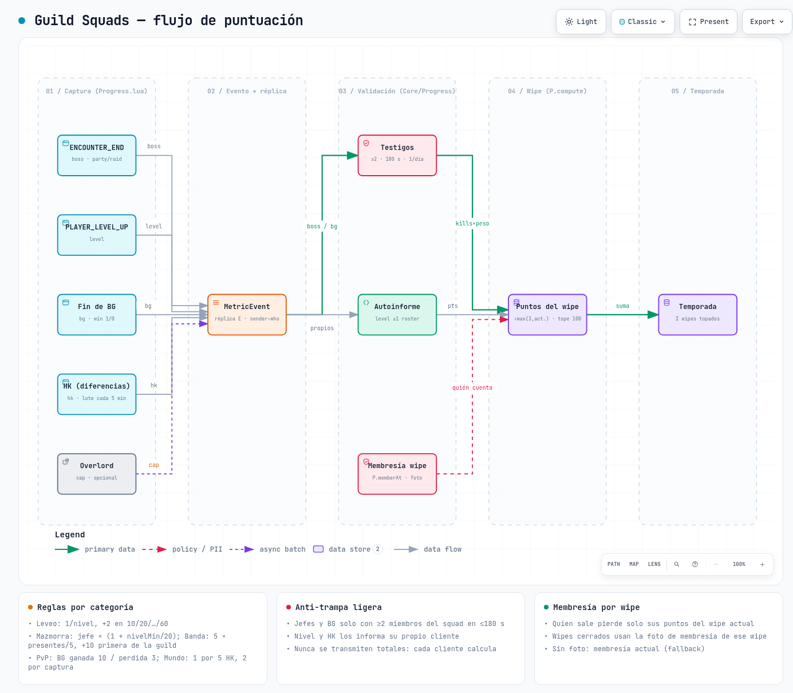
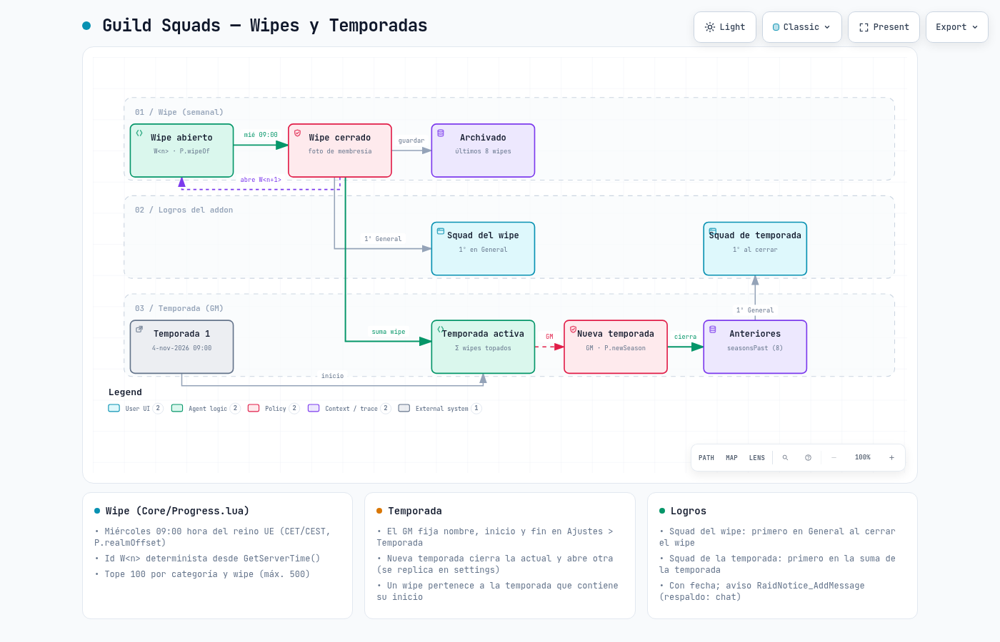
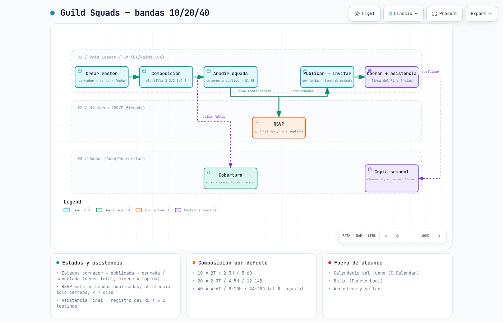
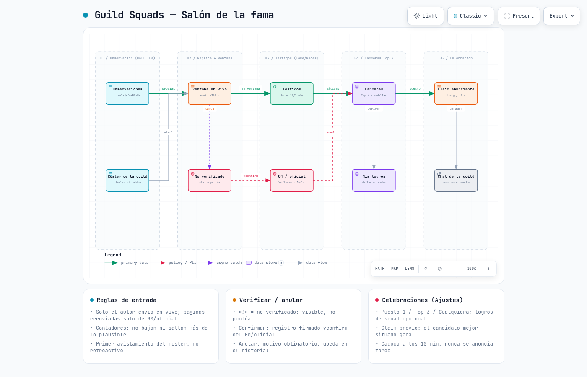

Generados con archify desde src/*.json.

01-arquitecturaMódulos del cliente (Core puro, glue WoW, UI), SavedVariables, canal GUILD/WHISPER, otros clientes, Overlord opcional, diag y lo que nunca ocurre.

02-ciclo-squadEstados del squad y de la membresía: crear, aprobar, solicitud/invitación, miembro, transferir, expulsar/salir, disolver, squad inactivo y rechazos sincronizados.

03-syncSecuencia de sincronización: hello con hashes, respuesta con jitter, merge LWW + autoridad, refresco de UI, bloqueo en encuentro, export/import.

04-ajustes-gmEl GM guarda los ajustes: registro versionado, difusión, validación de rango 0 en cada cliente y aplicación (p. ej., squads desactivados ocultan pestañas).

05-puntuacionFlujo de puntos: eventos → MetricEvent → réplica → membresía por wipe y testigos → normalización y tope → wipe → temporada.

06-wipe-temporadaWipe semanal (miércoles 09:00, hora del reino) abierto → cerrado → archivado; temporada del GM y "Nueva temporada"; logros del wipe y de la temporada.

07-bandasBandas 10/20/40: roster, composición, squads enteros G1–G8, cobertura, RSVP, publicar → invitar, cerrar + asistencia firmada, copia semanal. No incluye calendario ni botín.

08-salon-de-la-famaSalón de la fama: observaciones → ventana en vivo / «?» no verificado → testigos → carreras Top N (Confirmar/Anular) → logros → claim → chat de la guild.